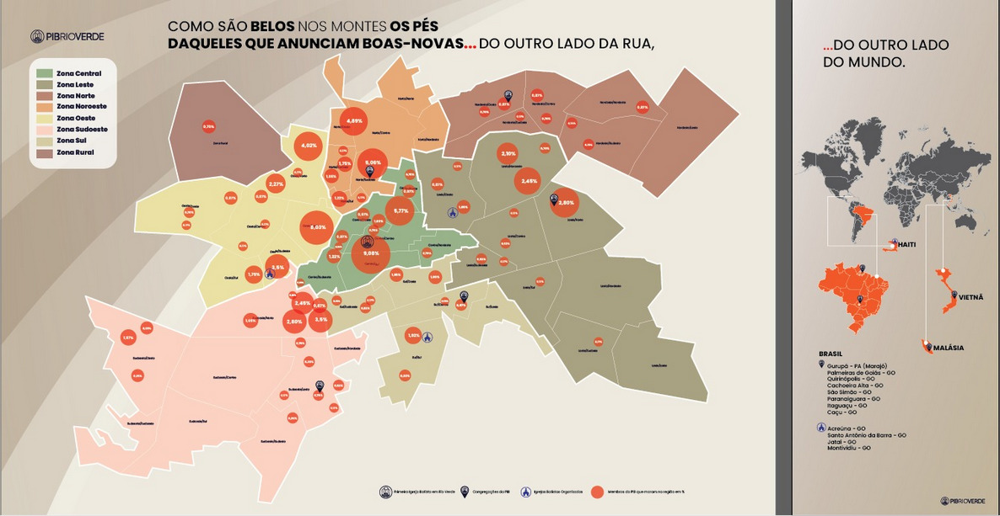

Missões PIB Rio Verde
Como são belos nos montes os pés daqueles que anunciam boas-novas... do outro lado da rua, do outro lado do mundo.

Como são belos nos montes os pés daqueles que anunciam boas-novas... do outro lado da rua, do outro lado do mundo.
